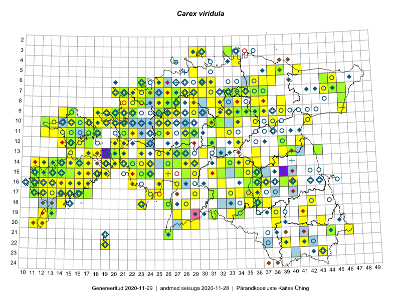

Carex viridula
Uuendatud: 2016-12-02
Kaardile koondatud taksonid: Carex viridula Michx.; Carex viridula var. viridula Michx.

Kaart põhineb 216 kirjel, neist vaatlusi 202 ja eksemplare 14. Taksonit on leitud 149 ruudust.
Kuvatud viited 20 esimesele andmebaasikirjele, ülejäänud PlutoFis
- Tiit Hallikma, Toomas Kukk, Indrek Tammekänd: 2015-06-09: 12-28: ala
- Ott Luuk, Peedu Saar: 2015-09-03: 03-30: ala
- Toomas Kukk, Tiit Hallikma: 2015-06-11: 11-29: ala
- Peedu Saar: 2015-08-04: 14-36: ala
- Toomas Kukk: 2014-06-18: 18-14: ala
- Tiit Hallikma, Indrek Tammekänd, Toomas Kukk: 2015-06-08: 14-26: ala
- Tiit Hallikma, Toomas Kukk: 2015-07-20: 07-44: ala
- Ott Luuk, Meeli Mesipuu: 2015-07-20: 10-31: ala
- Ott Luuk, Hannes Pehlak: 2015-07-22: 07-45: ala
- Peedu Saar: 2015-09-07: 16-17: ala
- Meeli Mesipuu, Kadri Tali: 2015-07-08: 14-17: ala
- Meeli Mesipuu: 2015-07-10: 14-16: ala
- Ott Luuk, Hannes Pehlak: 2015-06-10: 14-29: ala
- Meeli Mesipuu: 2015-07-11: 14-19: ala
- Meeli Mesipuu: 2015-07-13: 13-20: ala
- Thea Kull, Eerik Leibak: 2015-07-23: 08-46: ala
- Toomas Kukk, Ott Luuk, Sander Laherand: 2014-08-24: 14-22: ala
- Jana-Maria Habicht, Ester Valdvee: 2015-06-27: 07-34: ala
- Toomas Kukk, Thea Kull: 2014-08-20: 07-29: ala
- Indrek Tammekänd, Liisa Rennel, Agu Leivits, Hannes Pehlak, Irja Tammekänd: 2015-04-27: 15-24: ala